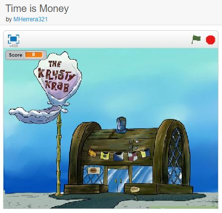
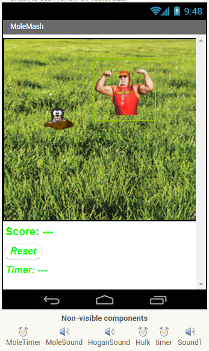
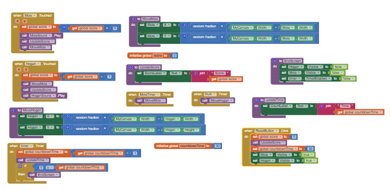
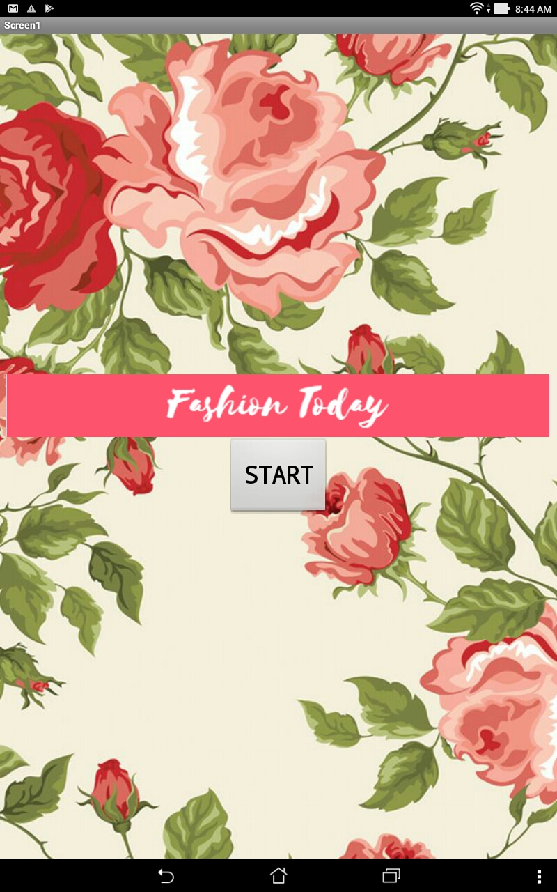

Home
Portfolio
About
This is my Portfolio Page!
My First Scratch Game!
https://scratch.mit.edu/projects/172083007/

Time is Money Game
https://scratch.mit.edu/projects/174220256/

Mole Mash App



Fashion 8 Ball App/Fashion Today App
~A simple and easy to use app that gives you tips on what to wear and what not to wear when picking clothes.


1.4.7 Image Artist
~The client I recieved is a family that would like a standard frame
applied to a large number of pictures that feature one or more of the
family members.The client enjoys abstract art as well and might like to
see geometric shape incorporated in the image–drawn on, as a border, or
as a mask. #1) Grey Circular Border

 #2) Red Border
#2) Red Border

 #3) Blue Crest
#3) Blue Crest